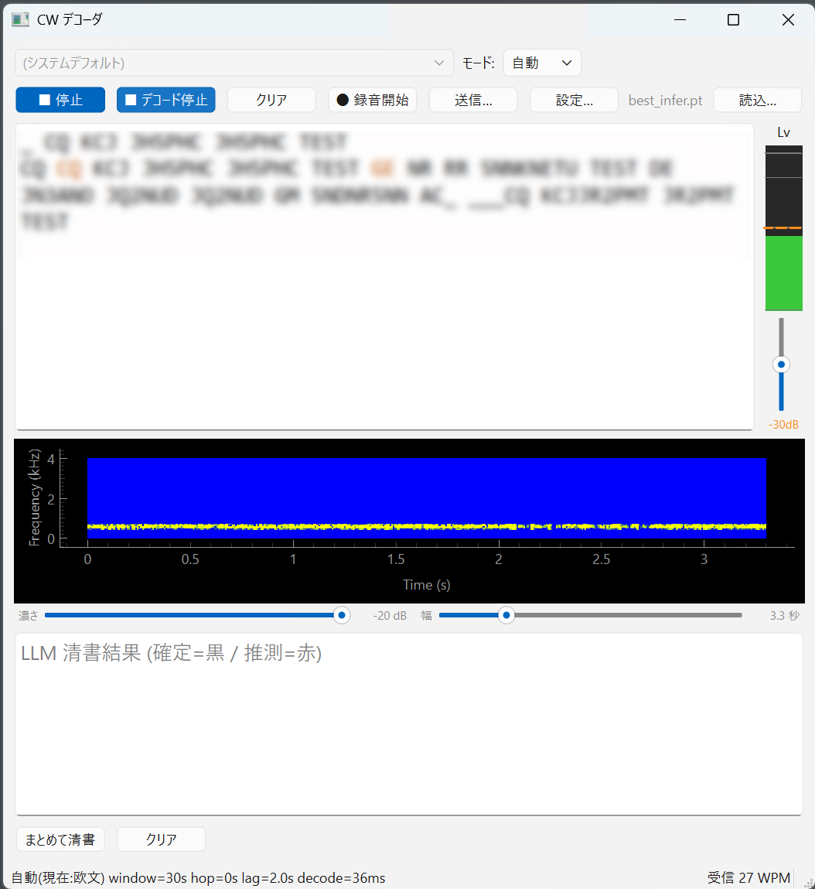
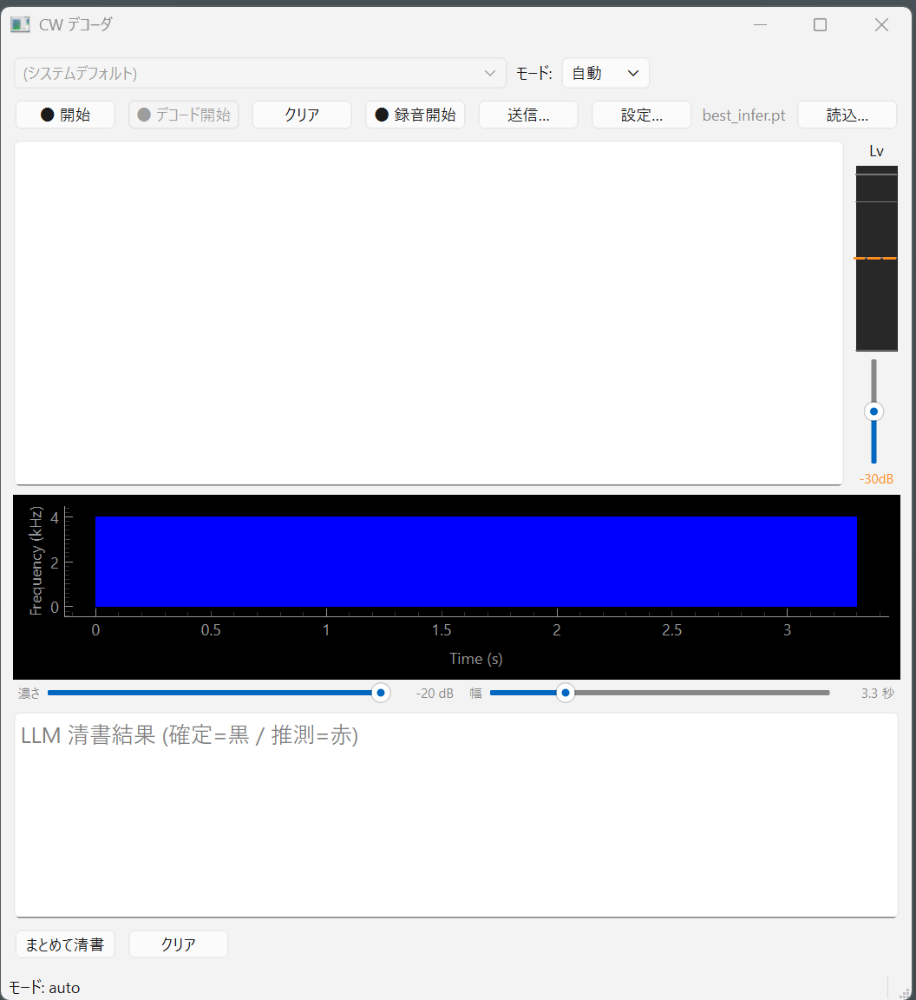
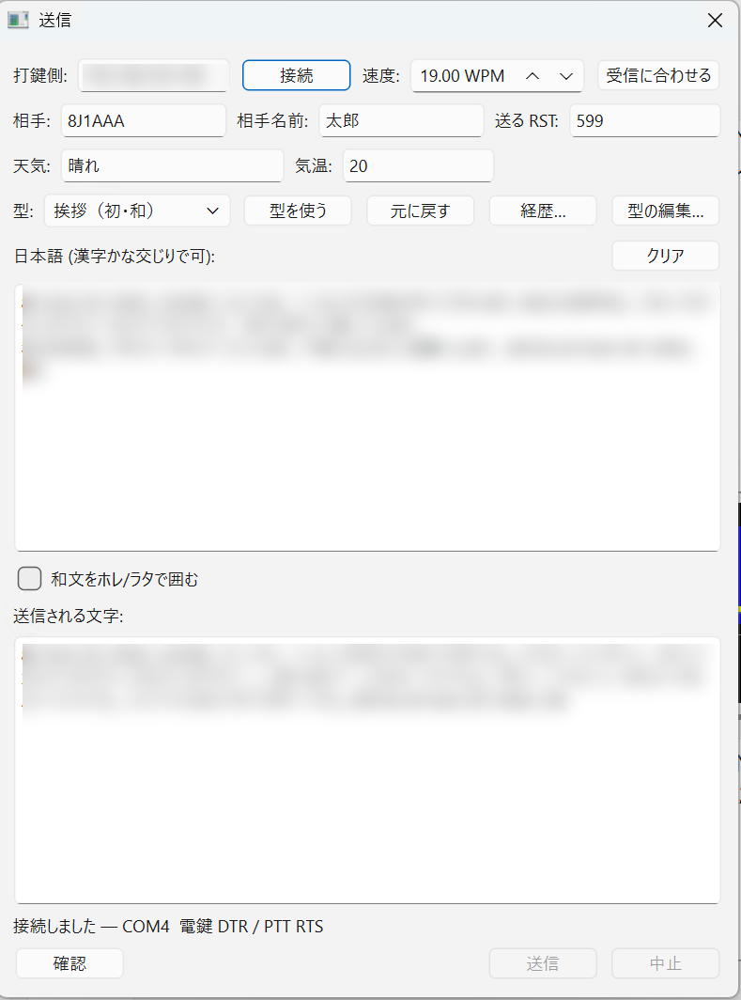
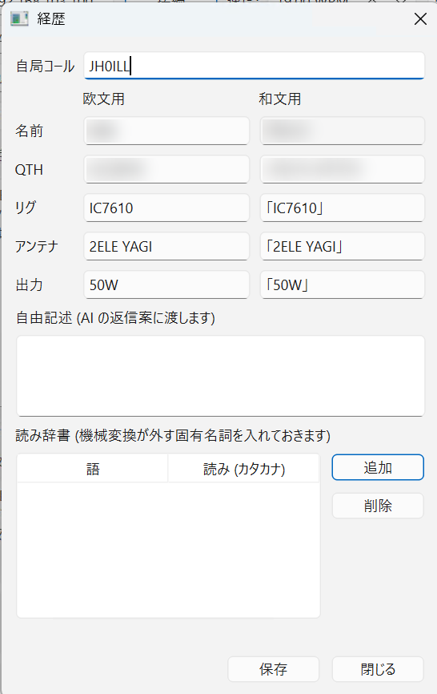
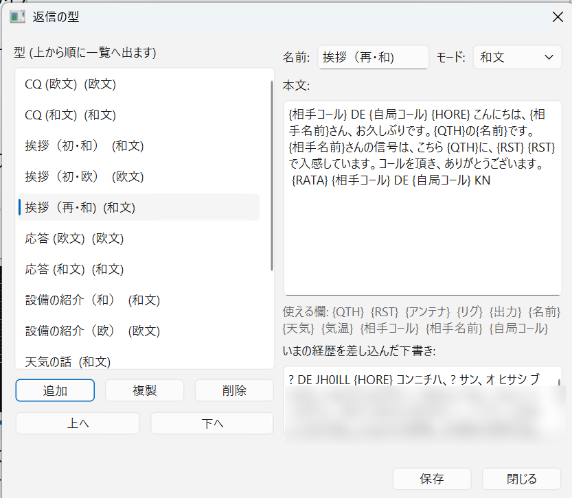

画面の説明
主画面には交信中に触るものだけを置いています。 それ以外は 設定… の中に移してあります。
主画面

止まっているときは、こうなります。

1 段目 — 入力とモード
| 部品 | はたらき |
|---|---|
| 入力デバイスのコンボ |
音の入り口を選びます。先頭は (システムデフォルト) で、
以降は [番号] 名前 の形で実際の装置が並びます。LAN 経由で音を受け取っているとき（ --net-source 付きで起動したとき）は
灰色になって選べません。音の出どころが LAN に固定されているためです。
|
| モード: | 欧文 和文 自動 の 3 つ。 選び方は「モードの選び方」をご覧ください。 |
2 段目 — 操作
| ボタン | はたらき |
|---|---|
| ● 開始 / ■ 停止 | 音の取り込みを始める／止めます。押すたびに切り替わる 1 つのボタンです。 止まっている間は下の ● デコード開始 が押せません。 |
| ● デコード開始 / ■ デコード停止 | 文字にする処理を始める／止めます。 取り込みと分けてあるのは、先にレベルとスケルチを合わせてから読み始められるようにするためです。 |
| クリア | デコード本文を消します。清書パネルは消えません。 |
| ● 録音開始 / ■ 録音停止 | 受信音を WAV で保存します。保存先は設定の入力タブで決めます。 |
| 送信… | 送信の画面を開きます。開いたまま主画面を操作できます。 |
| 設定… | 設定画面（6 タブ）を開きます。 |
| チェックポイント名（灰色の文字） | いま読み込んでいるモデルのファイル名です。読み込んでいなければ (未読込) と出ます。 |
| 読込… | モデルのファイル（.pt）を選び直します。ふだんは触りません。 |
本文とレベルメータ
中央の広い欄がデコード本文です。等幅フォントで表示しています。 右端に細いレベルメータが縦に付いていて、その中にスケルチのつまみ（縦スライダ）と、 いまのしきい値が橙色の数字で出ます。合わせ方は「スケルチ」をご覧ください。
本文は受信中でもマウスで選んでコピーできます（Ctrl+C）。 選んでいる間は、続きが届いても選択は外れません。 上へ遡って読んでいる間は自動で末尾へ飛びません。いちばん下まで戻すと、また最新行を追いかけます。
スペクトル表示

| つまみ | はたらき | 範囲 | 初期値 |
|---|---|---|---|
| 濃さ | 何 dB より弱い音を「背景」として黒く落とすかを決めます。 右へ動かすほど強い音だけが残り、符号がくっきりします。 雑音で画面が白っぽいときに使ってください。 | −100 〜 −20 dB | −80 dB |
| 幅 | 横軸に何秒ぶん映すかです。狭くすると符号が横に伸びて、点と線の区別が見やすくなります。 広くすると流れ全体をつかめます。 | 0.8 〜 12.8 秒 | 3.2 秒 |
この 2 つは見た目だけを変えます。デコード結果は変わりません。 符号がそれらしく見えるように、遠慮なく動かしてください。値は次回起動時にも残ります。
LLM 清書パネル
スペクトルの下が清書の結果です。何も無いときは LLM 清書結果 (確定=黒 / 推測=赤) と薄く出ています。 下に まとめて清書 と クリア のボタンがあります。 詳しくは LLM 清書 をご覧ください。
いちばん下の帯（ステータスバー）
左側にいまの状態が出ます（待機中、停止しました、 設定を保存しました など）。 右端には受信中の速度が 受信 20 WPM の形で常に出ています。 相手の速度に合わせて返す送信側の機能は、この値を使います。
受信中は、左側が読み取りの様子に入れ替わります。 window=30s hop=0.5s lag=2.0s decode=112ms のような形で、 確定タブの設定と、1 回の読み取りにかかった時間が出ます。 hop と lag を足して確かめられます （実効右文脈 = lag + hop ÷ 2、目標 2.25 秒）。 decode が hop に近づいたら読み取りが追いついていません。
設定画面
設定… で開きます。6 つのタブに分かれています。 この画面を開いている間、主画面は操作できません。 OK で反映、Cancel で捨てます。
ラベルの後ろに ⟳ が付いている項目は、OK を押しただけでは効きません。 次に ● 開始 を押したときから反映されます。 受信中に読み取りの土台を作り替えると音が途切れるためです。 どれが該当するかは 設定項目一覧にまとめてあります。
入力タブ

音の入り口まわりです。サンプルレート、帯域通過フィルタ（使う・中心周波数・帯域幅）、 スケルチの保持時間、自動録音の有無と保存先。
デコードタブ

モデルのファイル、計算に使う装置（cpu / cuda / auto）、CPU スレッド数、
確信度の閾値、プロサインの閾値、和文専用符号でモードを切り替えるかどうか。
確定タブ

「いつ文字を確定させるか」を決めます。ここは読み取りの精度に直結します。 真ん中に実効右文脈という読み取り専用の表示があり、 いまの設定が目標値からどれだけ離れているかが出ます。 意味は「確定の仕組み」をご覧ください。
補正タブ

辞書補正をどこまで使うかを 3 択で選びます （使わない / 欧文だけに使う / 欧文と和文の両方に使う）。 語彙ファイルの場所を開く で、語を足すためのファイルがある場所を開けます。
清書タブ

LLM の種類とモデル名、Ollama の宛先、自動清書の有無と間隔、応答待ちの上限、 短いプロンプトを使うか、推測を赤で出すか、清書の前に全体を読み直すか。
表示タブ

スペクトルを出すかどうかと、未確定の文字を出すかどうかの 2 つだけです。 スペクトルの濃さと幅は主画面のスライダで、見ながら合わせてください。
別ウィンドウで開く画面
送信

無線機を繋いだ別の PC に、LAN 越しで打鍵させる画面です。 この画面は開いたまま主画面を操作できます。相手を聞きながら返信を組み立てられるようにするためです。 詳しくは 送信する をご覧ください。
経歴

自局の情報を書いておく場所です。名前・QTH・リグ・アンテナ・出力を、
欧文用と和文用の 2 つに分けて持ちます。
返信の型に {名前} のように書いておくと、ここの値が差し込まれます。
送信画面の 経歴… から開きます。
返信の型

よく使う返信を登録しておく場所です。名前・モード・本文を編集でき、 いまの経歴を差し込んだ下書きをその場で確認できます。 送信画面の 型の編集… から開きます。